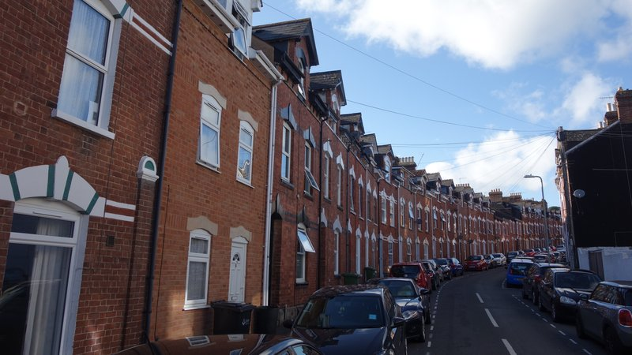
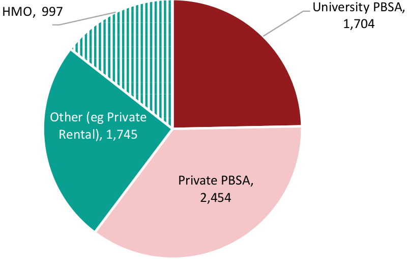

Exeter City Council is holding a public consultation on its proposals to amend its current Article 4 direction and accompanying Houses in Multiple Occupation Supplementary Planning Document (HMO SPD).
These are together intended to mitigate the impact of university expansion on the city’s residential housing stock by restricting the conversion of family housing into shared student accommodation in a defined area near the university’s Streatham campus.
In this special report, intended to facilitate informed responses to the council consultation, we outline the history of the current Article 4 direction and summarise the council’s approach.
We then consider the importance of reliable information in understanding the impact of the university’s growth on the city and highlight significant differences between the true numbers of its Exeter-based students and those it has been publishing, on which the council has relied in making student accommodation policy for the past fifteen years. We also ask whether the claim that Exeter student numbers have now peaked and will fall is credible.
We examine the methods used by the council and its consultants to identify where students live, assessing their reliance on student council tax exemption and HMO licencing records which omit between 50% and 80% of student-occupied residential housing stock. We highlight key consequences of confusing licensing with planning matters and excluding unlicensed HMOs from the analysis and also touch on the role of Purpose Built Student Accommodation (PBSA).
We examine problems with using council tax exemptions to define Article 4 direction area geographic boundaries and consider the council consultants’ mapping of different exemption thresholds to propose potential new Article 4 direction scenarios.
We then consider the council’s proposals, which differ from those presented by the consultants, and its reliance on misrepresenting the National Planning Policy Framework (NPPF) to justify changes that hardly add any residential streets to the existing Article 4 direction area at all.
We ask whether the current Article 4 direction has achieved its ostensible purpose during the past eleven years, highlight the necessity of future monitoring and enforcement and question council procrastination over delivering policy change.
We then assert that the most significant effect of university growth is its impact on the availability and price of private residential housing, and argue that new policies intended to address this issue should be included in the emerging Exeter Local Plan.
We say they should be based on genuinely robust evidence derived from accurate mapping of the student penetration of residential housing stock using data the university holds, and that accompanying policy could set out incremental targets for the eventual accommodation of almost all the university’s students in PBSA, creating needed new residential housing supply from existing stock.
We also say the university could and should provide car-free PBSA outside the city centre, with accompanying mobility services to enable students to travel between campus and halls, as other universities do.
We conclude that an Article 4 direction area with evidence-based boundaries that would satisfy both NPPF requirements and Exeter’s need for student accommodation policy is not only possible but essential in the interests of the whole city.
 Residential housing stock in use as student HMOs - Victoria Street in St James
The current Article 4 direction
The current Article 4 direction came into force in January 2012, five years after Exeter City Council produced the first of many mostly unpublished reports on the impact of university expansion on Exeter. The HMO SPD that currently accompanies it was adopted in January 2014, replacing an initial 2011 version.
The inadequacy of the council’s approach to student accommodation was already apparent to local residents: a 2009 petition signed by 350 St James’ residents said they were “concerned about the growing number of homes in multiple occupation in the ward”. Their petition proposed that “the whole of St James ward should be declared an area of planning restraint, in order both to protect us against a further increase in the number of HMOs and to maintain a balanced community”.
In 2009 planning policy restrictions could not be applied to many student HMOs as they were too small: a group of up to six people living together was not treated as a material change of use from a family dwelling. However the following year the outgoing Labour government introduced a new planning use class which brought many more shared student houses under planning control.
The subsequent coalition government then announced that it intended to retain the new use class, but would treat changes of use from family dwelling to HMO as permitted development that would not normally require planning permission.
This compelled councils which wanted to restrict conversions of residential dwellings to HMOs to make an Article Four direction to remove those permitted development rights, specifically the right to change the use of a building from family housing to an HMO without needing planning permission. Their removal would not outlaw such conversions, but would mean planning permission would be required before they could take place.
Exeter City Council duly proposed an Article Four direction area which would include streets in which 20% or more of dwellings were exempt from council tax because they were entirely occupied by students. At the time this equated to about 40 streets in St James, Newtown and Polsloe. In a further six streets more than two thirds of the dwellings were exempt from council tax for this reason.
An accompanying HMO SPD set out the planning matters that would be considered when conversion applications were made inside the Article 4 direction area.
A public consultation was held on the proposals. Responses included that the proposed 20% threshold was too high, reflecting research previously cited by the council which showed that a majority thought problems arose at a 10% threshold, and that it had been chosen arbitrarily. Others said that as student HMOs housed several people, often twice as many as a family dwelling, even a low threshold would equate to a significant proportion of the population in an area.
Another petition, this time signed by 772 St James residents, was submitted as a consultation response. This called for the council to “prevent any further conversions to HMOs, except in those streets where the existing high number of HMOs has already significantly harmed the family residential character and where, therefore, it may be in the resident’s or residents’ interest to allow further conversions.”
It also called for the council to “provide for all future Exeter university student accommodation in purpose-built developments on the campus itself or on discrete (individually distinct or separate) sites outside St James and other established residential neighbourhoods”.
Rachel Sutton, then city councillor with responsibility for development, nevertheless took the decision, with a council officer, to confirm an Article 4 direction which only restricted HMO conversions in a small core area based on a 20% council tax exemptions threshold (excluding nine streets with very high existing concentrations of students) and defined adjacent “buffer zones” which would be subject to potential future restriction when student council tax exemptions reached 20%.
Twelve month’s notice was given to avoid council liability for student landlord compensation claims and the Article 4 direction was adopted in January 2012. By May the following year the 20% threshold had already been exceeded in most of the “buffer zones”. The council admitted that despite the policies it had so far put in place there had “been a significant increase in shared student houses as a result of expansion by the University of Exeter” and in 2014 extended the restrictions to include all of the Article 4 area.
The council hasn’t attempted to extend or update it until now.
Exeter City Council proposed HMO Article 4 direction 2023. Source: consultation website.
The council consultation on its proposals
The council’s consultation on its proposals to amend the Article 4 direction asks respondents whether or not they support its preferred area revision option and to explain why. If they do not, it invites respondents to choose from three other options and explain that choice or offer an alternative proposal.
It also asks respondents whether or not they support the council’s proposed HMO SPD, to explain why, and to comment on what they describe as “the evidence” supporting their proposals supplied by a consultants’ report and “informed by extensive data analysis and stakeholder consultations with local councillors, HMO landlords and letting agents, the University of Exeter, student representatives and city council officers”.
A cursory glance at the council’s consultation materials immediately highlights the importance of providing reliable information to respondents. They lead with the claim that Exeter’s private rented sector “has undergone rapid growth over the past ten years”, presumably derived from the consultant’s report, which says: “The proportion of households in private rent has increased significantly over the past decade”.
In fact, the proportion of privately renting households in Exeter only grew by 2.8% between the 2021 and 2011 census, while the city’s population grew by 11.1%.
What did undergo rapid growth during this period, but is not quantified in the council’s consultation materials, is the number of University of Exeter students based at its Exeter campuses. This rose from 23,388 during the 2010-11 academic year to 35,105 during 2020-21, an increase of 50%.
Exeter City Council proposed HMO SPD consultation draft 2023. Source: consultation website.
Student numbers - the true picture
The numbers of university students in the city are the first and most important data to get right in understanding the impact of the university’s growth. Any attempt to derive meaningful conclusions in combination with other data without accurate figures for this foundational set will fail.
The council consultants twice mention that Higher Education Statistics Authority (HESA) data for University of Exeter student numbers includes students based at its Cornwall campus, which it correctly says are different from students based at its Exeter campuses. This is why Exeter Observer has never published HESA Exeter numbers, although apparently, according to the consultants, HESA data is “often reported in the press”.
The consultants nevertheless rely on Full-Time Equivalent (FTE) student numbers supplied by the university. These combine full-time and part-time students into a single total that the university uses to plan educational provision although not, of course, the provision of accommodation. Doing so leads the consultants to conclude, for example, that “between 2010-11 and 2020-21 the average annual increase in the number of students in Exeter has been around 800 students per annum”.
Following a series of freedom of information requests, we now know that the university’s FTE numbers have consistently and significantly understated the true picture for more than twenty years. In fact there were between 7,500 and 12,000 more students based in the city each year between 2000-01 and 2021-22 than the FTE numbers it published.
While the university can choose what to publish on its website, its obligations under the Freedom of Information Act 2000 are legally binding. It is a criminal offence to alter or conceal information with the intention of preventing disclosure following a request for the information under the Act.
Using these figures, we now also know that the average annual increase in the number of students in Exeter in the ten years to 2020-21 was actually nearly 1,200 – 46.5% more than the consultants concluded.
Unfortunately, the council has also relied on the university’s student numbers, including future projections, as the basis of city planning policy for the past fifteen years.
The 2010 Streatham campus masterplan, which is supposed to guide development to 2026, was based on the projection that there would be 15,800 FTE students on the campus by 2025-26. The 2012 Exeter Core Strategy, still the city’s principal planning policy document, is based on a projection that the number of full-time students living away from home in Exeter would be just 16,200 by the same year.
According to the university’s own figures this limit had already been exceeded by 2013-14, twelve years early, by when there were actually 26,500 students based at its Exeter campuses.
Even now, despite the council expressing scepticism about the university’s figures in unpublished reports, it apparently wants to believe them because “they suggest that the council’s current planning policy approach towards PBSA and student HMOs is achieving some success”.
So the council’s proposed HMO SPD says: “The University of Exeter has grown significantly since 2006-7 from approximately 11,200 full-time equivalent students to 27,300 in 2021-22.” The true numbers tell a much more impactful story. In 2006-7 there were more than 22,600 students based at its Exeter campuses: by last year this had risen to nearly 39,000.
Student numbers - have they peaked?
There is no doubt that the university has grown far faster than planned. Have Exeter student numbers peaked and will they fall over the next few years, as the university claims?
A significant drop in Exeter campus numbers to just under 29,600 this year follows two years in which university places were oversubscribed as a result of A-level grade inflation driven by teacher assessments made when exams were cancelled during the pandemic. This led to a surge in students gaining places at universities with more competitive entrance requirements.
A fall in Exeter undergraduate numbers was then expected after OFQUAL intervened to deflate grades to their pre-pandemic levels over two years, affecting the 2022 and 2023 results. The university accordingly made fewer offers for entry this year, although more than half of the drop in this year’s numbers was accounted for by a fall in postgraduate students.
The increase in tuition fees for new European Union students from 2021, and the end of their eligibility for tuition fee loans, is also likely to have contributed to this fall, although applications from other overseas students increased to record levels in the three years to 2022. As the council consultants note, while the level of UK domestic participation in higher education is among the highest in the world, and so is unlikely to rise much further, international student numbers may well continue to increase.
Council officers are right to be cautious. Another unpublished report says: “The message of an anticipated net decrease in the number of students needing accommodation is consistent with last year’s Planning Member Working Group report. However, once again, members are reminded that the university’s annual estimates fluctuate each year and have been underestimated in the past.”
Their conclusion? “One must be cautious about assuming that student numbers will vary exactly according to the projections”.
Residential housing stock in use as student HMOs - Raleigh Road in St Leonard’s
Where do students live?
Knowing how many university students are based in Exeter is the foundation of any assessment of the university’s impact on the city. To understand their impact on housing it is necessary to know where they live.
The council’s proposed HMO SPD echoes the consultants’ report, saying: “Data on student council tax exemptions, PBSA planning permissions and HMO licences gives a good indication of the location of student accommodation within Exeter”.
Obviously PBSA, whether built or planned, is intended to supply student accommodation, as are the co-living developments that are on their way too. However both student council tax exemptions and HMO licenses provide, at best, a partial account of where Exeter students live during term-time that omits between 50% and 80% of the residential housing stock they occupy.
Houses in Multiple Occupation
The first major flaw in the council consultants’ approach is its reliance on HMO licensing records, although it appears that council officers may have muddied the waters by telling them that the “definition of an HMO is largely the same for planning and licensing”.
This is obfuscation. The permitted development rights that are the focus of Article 4 directions are a planning, not licensing, matter. They cover HMOs which have between three and six unrelated occupants whether they are licensed or not.
Licenses are only required for HMOs when five or more people form more than one household, some of whom share toilet, bathroom or kitchen facilities and at least one of whom pays rent.
The requirement to license HMOs with five or more occupants is not related to permitted development rights that allow a change of use from dwellinghouse to HMO with between three and six occupants, and which Article 4 directions can remove. Both existing and proposed Exeter City Council Article 4 directions apply to the latter, not the former.
In addition, HMOs with more than six occupants are treated as sui generis because they do not fall in the same use class as those with six or fewer. Permitted development rights do not apply to such HMOs, so they always require planning permission, but they are included in the council HMO SPD so planning applications made for such conversions are also covered by the policy.
Employing HMO licensing distinctions to frame unrelated HMO planning restrictions leaves council consultation respondents in the dark over the scope of the policy. It also leads to absurd observations such as: “Some housing areas perceived as being high in HMOs are in fact areas of primarily private rental/student rental”.
Licensed HMOs & “non-HMO” private rental properties in Monks Road area. Source: consultants’ report.
An illustration in the consultants’ report demonstrates the fallacy. It says it depicts “an area with many HMOs where there are also a large number of non-HMO rental properties”. The consultants seem not to be aware that the distinction they claim between the two is neither how things are laid out in planning policy nor on the ground in the Monks Road area.
In the sole paragraph in their 64 page report in which they touch on this issue, they suggest that up to six unrelated students sharing a house could nevertheless constitute a single household because they could be considered to be what they call a “closely knit peer group”. This is despite planning policy guidance that typically exemplifies this kind of household as “a homeowner living with a lodger” or “a small religious community”.
(They also cite a St James HMO appeal decision from last year despite it concerning a house in Hoopern Street in which unrelated sharers already lived.)
Were Exeter’s unrelated student housesharers to be treated as single households for planning policy purposes, an Article 4 direction that removes permitted HMO development rights would have extremely limited scope as it would not apply to any student houseshares with six or fewer residents.
And although there may be some mixed HMOs in the Article 4 direction area in which not all residents are students, the accompanying HMO SPD makes clear that its primary purpose is addressing housing impacts resulting from the university’s growth. As a result it would not apply to these houseshares either.
It would also not apply to houseshares with more than six residents in any combination as they all fall outside the planning use classes which Article 4 directions address.
On the view put forward by the consultants and reflected in their claim that “the increase in private rental for both students and non-students is outside planning controls”, it is hard to see to what the proposed Article 4 direction and accompanying HMO SPD planning controls might actually apply.
The consultants’ focus on licensed HMOs also obscures just how much Exeter housing stock that might otherwise be used to house residents is instead being occupied by students.
Relying solely on council HMO licensing figures, they conclude that Exeter HMO numbers are only increasing at a net rate of twenty per annum and peaked at 1,385 last year. What about all the unlicensed HMOs in the city?
The council is required to estimate how many there are of these by central government each year. The resulting MHCLG figures show that total Exeter HMO numbers increased significantly between 2012, when the council told the government there were 2,510 in the city of which 836 were licensed, and 2018, when it said there were 4,412 HMOs in Exeter of which 903 were licensed.
However the council’s estimated total has remained exactly the same as its 2018 return for the past five years running, so its estimates for the four years since 2018 must be viewed with extreme scepticism. Not least because it also says that there are now nearly 500 more licensed HMOs than there were then, so the number of unlicensed HMOs must have fallen by exactly the same amount at the same time. Quite a coincidence.
If, instead, the statistical trend in the three years before the council’s total HMO estimate became fixed in place has continued, the true number of HMOs in the city is now more likely to be in excess of 7,200. This would be consistent with the rise in student numbers during the past five years, and would mean that around 80% of the city’s HMOs are missing from the consultants’ analysis.
Student council tax exemptions
The second major flaw in the council consultants’ approach is its reliance on student council tax exemption records.
Back in 2010 the council thought that student council tax exemption figures provided “the most robust, evidence-based approach to identifying” student occupation of residential housing. In December 2021 it still thought they were a reliable “indicator of the distribution of the student population”.
There are several reasons why not. One is that the exemptions apply to dwellings, which range from individual studio flats to multi-bedroom cluster flats with a dozen occupants or more. A second is that some students live in mixed households which cannot claim exemption, or in student households which do not. A third, as a 2015 Monks Road study showed, is that students often live in residential housing that was once council tax exempt but is no longer.
The ONS concluded in November 2021 that council tax records cannot be relied on for this purpose after it found that only half of all student addresses have any indication on council tax that students live there.
So not only should the council assume that its HMO licensing data omits around 80% of the city’s HMOs, it should also assume that its council tax exemption data omits around half the city’s university students.
Its current HMO SPD acknowledges that “not all students who live in private houses are in properties that are registered as exempt from council tax” and that “the figures for council tax exemptions do not show the whole picture” as far as HMOs are concerned. Emma Morse, the councillor who is responsible for city development, acknowledged the limitations of council tax exemption data at a meeting in January this year.
But both the consultants’ analysis and the council’s proposed Article 4 direction and HMO SPD nevertheless rely on them from the ground up.
 Student council tax exemptions by accommodation type. Source: consultants’ report.
Purpose Built Student Accommodation
Council tax exemption figures for private sector-provided PBSA are collected by central government alongside student exemptions in residential housing stock, but student accommodation that is owned and managed by the university falls under a different council tax exemption regime.
The consultants’ report found that Exeter had “around 6,900 households with student council tax exemptions in March 2022” of which it reckoned 2,450 were accommodated in private PBSA and 1,700 by the university with another 2,750 residential dwellings exempt of which just under 1,000 were licensed as HMOs.
However these finding are inconsistent with the MHCLG figures, which the report acknowledges. But the report then fails to distinguish between the two student council tax exemption regimes.
What is the true split? Back in 2006 the council thought “about 50%” of Exeter’s university students lived in private rented accommodation. At the time there were 22,600 students based at the university’s Exeter campuses of which around 11,300 would therefore have been living in the city’s residential housing stock.
By the end of last year the council thought 49% of the university’s Exeter students were living in private rented accommodation, so the proportion had hardly changed. But Exeter university student numbers had increased to just over 38,800, which would mean that an additional 7,700 students were living in residential stock.
Are the council’s percentages reliable? By last October there were just under 12,500 bedspaces in private PBSA and university accommodation combined. The consultants cite “reports of very high occupancy” rates of around 90% – without providing sources – which would mean nearly 11,250 Exeter university students could be living in this form of term-time accommodation.
This would leave another 18,350 Exeter campus-based students living in residential housing stock, 62% of the total this year, following the fall in student numbers. This is 7% more than the council says in its proposed HMO SPD.
What about HMOs? The consultants estimate that these provide “around 9,100 habitable student bedspaces”. This accounts for fewer than half the students who are not in PBSA this year, omitting more than 9,200 of them from their analysis. These students are likely to be living in around 2,650 dwellings at the average occupancy rate cited in previous council reports.
The consultants account for 2,750 non-PBSA student households in their analysis. So that’s a total of 5,400 residential dwellings occupied by students in Exeter this year. 41% of the private rented housing stock and nearly 600 more than the city’s supply of council-owned homes.
The consultants also estimated that there are around 6,000 private rented dwellings in Exeter, apparently relying on Energy Performance Certificate (EPC) data. However, as they acknowledge in a footnote, the 2021 census found 13,100 private rented dwellings in the city, well over twice as many. They do not, however, recalculate findings such as those depicted in a map of private rental property locations which omits more than 7,000 dwellings as a result.
Private rental property locations according to EPC data. Source: consultants’ report.
A 20% council tax exemption threshold
The council’s proposed HMO SPD says it “will continue to monitor HMO licences, PBSA delivery and student council tax exemptions” to make student accommodation policy. But relying on these figures to identify where university students live in Exeter, at least those who do not live in PBSA, means making policy without considering around half of those who live in the city’s residential housing stock. More if the unsourced reports of PBSA occupancy rates cited by the consultants are unreliable too.
Similar problems arise when student council tax exemptions are used to define the geographic boundaries to which the policy applies. The boundaries of the existing Article 4 direction area were decided by including streets in which 20% or more dwellings were student council tax exempt and excluding a handful where student numbers were so high that remaining residents would be disadvantaged by an HMO conversion prohibition when they sold up.
This 20% threshold originated in a 2008 council planning policy, was fixed in the council’s initial 2011 HMO SPD and has remained in place ever since despite apparently being chosen because it looked about right on the ground at the time to council officers. It was supposed to define the point at which of an overconcentration of HMOs would adversely affecting community balance, as laid out the (still current) Exeter Local Plan and included in the St James Neighbourhood Plan.
In their review the consultants apply 2011 census output area data to conclude that the 20% threshold “would appear a ‘tipping point’ where the character begins to change toward student-dominated areas”. But they also say: “There is no locally robust metric of percentages, and the figures vary from council to council”, although their brief assessment of eleven other Article 4 direction areas finds that many councils employ a 10% threshold instead, albeit with varying calculation methods.
Current Article 4 direction area. Source: consultants’ report.
Mapping the 20% threshold
To map the locations where this 20% threshold might now apply, and so propose new Article 4 direction area boundaries, the consultants recommend the use of unique postcode level data. They say doing so “provides the most efficient basis for assessment of numbers of council tax exemptions and numbers of properties” and “simplifies joining of council tax records, HMO licencing and other data”.
An average of just under 52 residents live in each unique postcode area in Exeter but postcode populations in the city range from zero in commercial areas to as many as 600 on the university’s Streatham campus. The consultants acknowledge the problems this creates, and that other councils use ONS output area data to set their Article 4 direction area boundaries instead because they “smooth out” these inconsistencies. But they nevertheless (mostly) stick to using postcode data in their analysis.
They find “65 postcode areas where more than 50% of residential properties are student households” as well as “several areas outside the current Article 4 area [that] have now passed a threshold of 20% of properties being student housing” while more are “approaching the 20% tipping point”.
This suggests, as their analysis omits around half the students who are not living in PBSA, that there may be 65 postcode areas in which student households occupy more or less all the residential housing stock, and several other areas in which they occupy around 40% of the dwellings.
The consultants take these 65 postcode area and mix them with ONS output areas where the 20% council tax exemption threshold is exceeded. Then they make “minor infilling and adjustments as required” and include the university campus and student halls “for completeness” and “the entirety of postcode sector EX4 6” because of “several pockets of very high concentrations of student housing” as well as “the proximity to the university” and “an overall concentration of 29% student housing”.
They also cite “evidence of ‘leapfrogging’ pressure” which they say accelerates the spread of student housing across the city because a “tightly drawn Article 4 area” has “the effect of dispersing new HMOs to areas away from the existing student concentrations”.
They finally recommend “that the data is examined to ensure areas flagged as 20% due to the presence of very few residential addresses are not incorrectly added to the map.”
Notwithstanding their omission of thousands of student-occupied dwellings, as well as proximity effects around St Luke’s campus, they employ this hotch-potch to map potential new Article 4 direction area boundaries that they present as a continuity option.
Consultants’ Article 4 direction area report continuity option 2 map. Source: consultants’ report.
A 10% threshold with “student quarters”?
The consultants also present an expansion option. This maps potential Article 4 direction area boundaries using a student council tax exemption threshold of 10% and by identifying areas that are already “overwhelmingly” student housing (with 70% or more student households, of which they identify several) to create student quarters in which HMOs would be encouraged to prevent leapfrogging.
However they caution that a 10% threshold would be “a departure from the current approach” that is “untested and may be vulnerable to challenge”. Unless the Article 4 area review does no more than fiddle at the margins it will fit this description anyway.
They also say that a new local plan policy “may be required to ensure HMO growth and PBSA remain balanced” if the council adopts an expanded Article 4 area, which “would require significant changes to local plan and SPD policy and justification”. No explanation of why such a policy would be required or what changes to existing Exeter planning policy would be necessary is provided.
They add that any changes would mean the council would “need to consult widely and carefully document the process and rationale for the decision”. This is supposed to be what the council is doing now.
Consultants’ Article 4 direction area report expansion option 3 map. Source: consultants’ report.
A wider Article 4 direction area?
The consultants also briefly consider whether an Article 4 direction covering all the city’s built-up area (which is rather less than the whole city) would be viable. They say this option would aim to “limit growth in HMOs (for students) with a focus on delivering PBSA to meet 100% of the growth in the student population”, very much as the 2010 St James residents’ petition called for.
They also say it would entail the introduction of “detailed criteria-based policies for supporting delivery of non-student HMOs” in order to meet the needs of people such as those with live-in carers or protected characteristics who may need this form of accommodation as well as low-income single households which rely on housing benefit to pay the rent.
There doesn’t seem to be any reason why such a policy could not be introduced. But the consultants nevertheless conclude, despite not quantifying any of their claims, that a broadscale Article 4 area “would severely inhibit the delivery of HMOs for non-student residents” and “place a large obstacle in the way of providing such accommodation” as well as a “significant burden” on council development management.
They are also confident that “most of the Exeter City Council area features neighbourhoods with no student housing, and many areas are not targets for student HMO conversion”. While there is no doubt that student housing is much more concentrated in some parts of Exeter than others, student housing can now be found across large swathes of the city.
The consultants are correct to say that a broadscale approach would require more comprehensive analysis, but more comprehensive analysis is needed in any case. And while they say that the policies needed to accompany it would have to be introduced as part of the new Exeter Local Plan, the introduction of new planning policies and supporting evidence is precisely what local plan-making is for.
The council began a major public consultation on a draft outline version of the new Exeter Local Plan last September, three months after the consultants’ report was substantially complete. Yet the draft outline plan did not address student accommodation at all, despite government planning reform proposals that mean such policies will have to be presented in local plans instead of SPDs, which are due to be phased out.
A 10% threshold mapping that extended the consultants’ third option to include the missing 9,000 or so students who are living in Exeter’s residential housing stock but do not appear in the council tax exemption records could have offered a firm basis for a appropriate draft outline local plan policy, but was not provided.
This would have articulated a comprehensive Article 4 direction area option much more usefully than simply drawing a line around Exeter’s built-up area and saying it is too big.
Consultants’ Article 4 direction area report built-up area option 4 map. Source: consultants’ report.
The council’s consultation options
Instead of relying on the consultants’ Article 4 area boundary mappings, the council proposes significantly different boundary options in its consultation documents. No explanation for the differences is provided.
Consultation option two is the council’s preferred option, a scaled back version of the consultant’s continuity option that hardly adds any residential streets to the existing Article 4 direction area at all. The council nevertheless claims these boundaries would “help to maintain some balance between student and non-student housing in the area” while not “unduly” restricting the provision of HMOs for non-students.
Council Article 4 direction area consultation option 2 map. Source: consultation website.
Consultation option three is a scaled back version of the consultant’s expansion option that removes almost all the exclusion zones intended to prevent leapfrogging outside the Article 4 area. The council comes up with several reasons why the city should not adopt this option.
It says small postcodes either side of the new boundary “may regularly change between meeting and not meeting the 10% threshold”, but this would be true of any Article 4 area boundary set at any marginal threshold percentage.
It says “additional work” would “be needed to identify new exempt areas”, although as none of the exclusion zones suggested by the consultants appear on the council’s option map it isn’t clear where these new exempt areas would be.
It also says this option would “mark a significant change from our current planning policy on HMOs, potentially requiring a new planning policy which will take time for us to adopt” which it says would “delay our ability to introduce a new Article 4 direction”. The council does not explain why it suddenly finds itself in such a hurry after so many years of inaction, nor account for the delays in the review process for which it is responsible.
It also says it doesn’t like this option as it would “require PBSA to be provided at higher rates in order to meet student housing needs” despite its current policy already aiming to increase PBSA delivery to house 75% of the additional students that come to Exeter as a result of the university’s expansion.
Council Article 4 direction area consultation option 3 map. Source: consultation website.
Council consultation option four is, in contrast, an expanded version of the consultant’s built-up area option boundaries that extends them to match the city’s entire administrative footprint, including large areas of greenspace around most of the built-up area’s edges.
Unsurprisingly, as the consultants’ did not consider this option, the council says it is “not justified by the evidence gathered”. It repeats the consultants’ criticisms of their version of this option without acknowledging that there are ways of making a truly comprehensive Article 4 area work.
Council Article 4 direction area consultation option 4 map. Source: consultation website.
National Planning Policy Framework compliance
The council also promotes consultation option two, in contrast with options three and four, as compliant with NPPF guidance that “Article 4 Directions are justified by clear evidence and applied to the smallest geographical area possible”. It says the fourth option is “highly contrary” to this requirement.
The consultants also say their fourth option would not comply with the guidance because “the data does not appear to justify including residential areas outside of the city centre” and “much of Exeter has no student properties or HMOs”. However they rely on 2011 census data to make this claim, which would not hold water were unlicensed HMOs included in the analysis.
They initially say the logic of increasing HMO conversion opportunities in student areas while restricting them in areas which still have a low percentage of student properties, as per their version of option three, is “robust and can be justified as compliant with guidance”. But they end by saying bluntly that it “does not meet NPPF requirements” without providing any more detail.
NPPF paragraph 53 was updated in 2021, when the “robust evidence” and “smallest geographical area possible” provisions were added.
The consultants quote National Planning Practice Guidance saying that there would “need to be a particularly strong justification for the withdrawal of permitted development rights relating to a wide area (e.g. those covering a large proportion of or the entire area of a local planning authority)”. However this guidance was published in 2010 and so predates NPPF, which was first published in 2012 and updated in 2018, 2019 and 2021.
The Secretary of State issued a Written Ministerial Statement immediately before the 2021 NPPF update came into force that laid out the government’s intentions in changing the rules around the use of Article 4 directions.
It said: “This change only applies to changes from non-residential to residential use. This change does not apply to changes between different residential uses, which will enable local authorities to continue to restrict change of use from a family home to a house of multiple occupancy where that is necessary to protect local amenity or the well-being of an area.” (Bold type reproduced from the original.)
It also said: “Article 4 directions should be very carefully targeted, applying only to those locations where they are necessary to avoid wholly unacceptable adverse impacts. For that reason, I want to make clear that the geographical coverage of all Article 4 directions should be the smallest area possible to achieve the aim of the Article 4 direction.” (Bold type added for emphasis.)
The Secretary of State also asserted his powers to intervene where Article 4 directions do not comply with the new policy, a risk council development director Ian Collinson emphasised in his report to the Executive committee meeting that approved the current consultation.
His report also said: “The Planning Practice Guidance states however that the Secretary of State will only intervene in Article 4 directions where there are clear reasons for doing so”, and: “The evidence base and undertaking robust and transparent public consultation on the direction should reduce this risk.”
What it did not say is that since the new rules were introduced the Secretary of State has not intervened in a single Article 4 direction that restricts changes of use from family homes to HMOs despite intervening twenty times in other cases in the course of less than twelve months.
Of these interventions seventeen concerned commercial to residential changes of use, confirming the intention expressed in the Written Ministerial Statement, which was “to support High Streets” by introducing a “higher threshold for making Article 4 directions relating to change of use to residential”. The other three interventions concerned restrictions on adding storeys on flats and houses and creating new housing via demolition.
The consultants do not consider the ministerial statement or subsequent ministerial interventions in their report.
Robust evidence would indeed be required to support a significantly extended Article 4 direction area. But gathering such evidence, including the missing 9,000 or so students who are living in Exeter’s residential housing stock but cannot be identified in the council tax records, perhaps to map what the 10% threshold and student quarters outlined in the consultants’ third option actually looks like, should be straightforward.
Then the council could propose an Article 4 direction area that covers the smallest area possible to achieve its purpose, as the Secretary of State said, and justify its policy with truly robust data rather than relying on a mishmash of methologies and partial postcode level and output area data that the consultants emphasise is “the smallest geography from which to work” without querying whether this is what NPPF paragraph 53 intends.
HMO license locations in Exeter city centre. Source: consultants’ report.
Has the Article 4 direction worked?
What’s also missing from the consultants’ report is a proper assessment of whether the existing Article 4 direction has actually worked.
We asked the council how many planning applications for change of use from residential housing to HMO have been made in the Article 4 direction area since it removed permitted development rights for such conversions in January 2012, as well as how many had been approved.
We also asked it how many times it had taken enforcement action against Article 4 direction breaches since then and how many such actions had been successful.
We thought these figures would be obvious metrics with which to measure the policy’s success, but the council evidently does not as it doesn’t collate them. (We have since submitted a freedom of information request for the information and will report it when it has been compiled and released.)
It also doesn’t collect data on policy compliance. As Councillor Emma Morse, the Executive member with responsibility for city development, admitted in June 2021, the council is “not able to undertake regular or proactive compliance monitoring in relation to the Article 4 directive area”.
She said that it instead relied on complaints from members of the public who suspect that properties are being used as HMOs without the necessary permissions, adding that “the number of such complaints was, however, very low, there being two in 2017, one in 2018 and none since then.”
When asked how likely it was that unlawful HMO conversions in the Article 4 direction area were “slipping through the net”, she replied that, because of the council’s reliance on complaints and its “limited capacity for additional monitoring and enforcement of the Article 4 restrictions” it did not “have any data on the impact on residential character”.
An unpublished council report from October last year also admitted that the council “does not have the monitoring evidence to be able to draw clear conclusions” on the reason for an “increase in the number of exempt properties” inside the Article 4 area, adding: “Without significant resources being made available for monitoring, enforcement and communication with HMO landlords, the number of student HMOs within some parts of the Article 4 area may start to increase again.”
In January this year when Councillor Tess Read asked Emma Morse how many houses had been returned to family use from HMO occupancy as a result of the policy, Emma Morse said she did not know, but did acknowledge that the number of HMOs had increased. A council officer attending the meeting nevertheless claimed that the policy was deterring conversions in the Article 4 area.
Residential housing stock in use as student HMOs - Sylvan Road in Pennsylvania
How do student HMOs affect Exeter?
Councillors were told last year that the consultants would assess “the impact of additional HMOs on local communities and amenities” as part of their review. Blight, waste, parking, noise and antisocial behaviour were all covered in just seven paragraphs in their report, which nevertheless included rather surprising findings such as “very few undergraduates have cars”.
Notwithstanding their impact en masse in parts of the city, the majority of Exeter university students are responsible and socially-minded. But community balance considerations are not the only issue that the council’s student accommodation policy should address. Neither consultants’ report nor council policy deal with the most significant effect of university growth: its impact on the availability and price of private residential housing.
Renting to students is much more profitable for landlords than renting to families, as students (or their parents) are charged rents that are often close to double residential rates. The inflated value of the city’s housing stock as student HMOs frequently makes it unaffordable to residents.
Thousands of dwellings that were owner-occupied or resident-rented have been become student accommodation across the city in the eleven years since the Article 4 direction came into force. Any city in which such a high proportion of the residential housing stock is occupied by students needs planning policy that gets to grips with this issue and its consequences, yet the council’s preferred consultation option is barely discernible from doing nothing at all.
Even after realising two years ago that it could no longer ignore the issue when a group of Pennsylvania residents petitioned it to expand the Article 4 area, it took six months to decide to hold a review, then allowed fourteen months to pass before the consultants finished their report, with the local elections providing an excuse to delay the consultation for a further four months.
It doesn’t intend to make a decision on the final version of its proposals until the end of this year, which means the new Article 4 direction area will not come into force until the end of 2024 because twelve months’ notice is required to limit any claims for financial compensation. Could there be a single student landlord in Exeter who has not, by now, had more than enough time to search out all the residential housing stock that they might ever want to convert to HMOs?
Councillors were told in March last year that the new policy would come into force a year earlier, at the end of 2023. But had the council addressed the Pennsylvania petition promptly it could have commissioned consultants in August 2021, approved a public consultation in January 2022 and made a final decision in May — which would have meant a new Article 4 area direction, for what it might be worth, coming into force last month.
Taking as long as it has, and knowing as it does that any new HMO SPD almost certainly has a very limited lifespan, the council should not only be seeking truly robust data on which to base its student accommodation policies, it should be intending those policies to form a significant element of the new Exeter Local Plan.
Student accommodation policy for Exeter
For the council to make student accommodation planning policy in the interests of the whole city it needs to do more than repeat the many mistakes it has made in setting it so far, whether intentionally or otherwise.
It needs to understand the limitations of the information it holds, and the limits of the consultants’ analysis which follows. It should recognise the fallacy of using council tax exemptions and HMO licenses to identify where students live in residential housing stock and stop pretending that the number of student HMOs has been fixed for the past five years.
It should instead use the true number of university students in Exeter, not FTEs, to calculate term-time student accommodation requirements and so accurately frame its policies.
To do so it also needs to know how many students actually stay in university-provided accommodation and privately-provided PBSA, not how many beds would be occupied if all such blocks were full, and so how many others are living in the city’s residential housing stock.
Exeter PBSA map. Source: University of Exeter.
We requested this information from the university for the 2021-22 academic year under freedom of information legislation last August. The university has been by turns evasive, defiant and silent in response. Following an Information Commissioner’s Office investigation a judge will decide the case at a First-tier Information Rights Tribunal sometime in the next few weeks.
We hope to report the facts of the matter soon after, then request the same data for each of the past twenty years to enable the council not only to understand the top-level distribution of students in different types of accommodation during its long period of growth, but also to make independent predictions about the university’s future growth based on accurate historical data instead of the university’s repeatedly unreliable projections.
We have so far asked only for summary information: there is nothing precluding the university sharing the data it holds on student occupation of housing stock at ONS output area and postcode level with the council. Provided the information is not personally-identifying it would comply with data protection rules.
This data would enable the council to accurately map the student penetration of residential housing stock and so provide truly robust evidence to support an Article 4 direction area with truly evidence-based boundaries.
Exeter HMOs to rent via the university in November 2022. Source: University of Exeter.
However there is little point in the council spending time and resources on a policy which is intended to restrict the conversion of residential housing stock to HMOs if it does not allocate sufficient resources to monitor or enforce it.
In such circumstances an expanded Article 4 direction area would be just as ineffective as the current Article 4 direction already is. There are many ways the council could finance the requisite resources: effectively-targeted Community Infrastructure Levy charges is just one of them.
The council could also use the new Exeter Local Plan to pass student housing policies that would compel the university to take responsibility for the supply of accommodation it needs to fulfil its development plans without treating the city as an externality.
This would include changing its PBSA policy so that instead of aiming to accommodate 75% of additional students in PBSA it would aim to accommodate all the university’s students (who are not already residents) that way.
According to landlords interviewed by the council’s consultants, there has been “no softening in demand for student flats and HMOs as a result of increases in PBSA”. Without setting well-defined and target-based policies for achieving these aims, and effectively monitoring and enforcing them, there can be no hope of increasing numbers of students moving into PBSA as each new cohort arrives.
Such a policy would still take years to reclaim the city’s residential housing stock from student occupation, but is a much better route to substantially increasing the city’s housing supply than building to rent at the extreme densities being proposed on major Liveable Exeter sites.
In addition, to prevent PBSA development continuing on city centre sites that should be used for employment, retail and service delivery, sucking money out of Exeter while consuming valuable land which might otherwise be used for economically productive purposes, the locations of future off-campus PBSA must also be restricted to suitable sites.
Nothing prevents the university buying development land elsewhere, building without parking provision and instead providing mobility services to enable students to travel between campus and halls with ease, as other universities do and just as the residents of St James said in their petition eleven years ago.
The 2021 census found that more than 20% of Exeter’s population was students, compared with a national average of 7.7%, when many of them were elsewhere because of the pandemic. The university’s own data confirms the figure was much higher last year and remains higher now, at nearly 23%. Perhaps the new Exeter Local Plan should also seek to set the bar beyond which the whole city becomes imbalanced because too many students live here during term-time?
UPDATE – 29 June 2023
The council has now confirmed that it has never taken enforcement action against Article 4 direction breaches in the city. It has also confirmed that nine of fifteen applications for permission for change of use from dwellinghouse to HMO that have been made in the Article 4 direction area since it was introduced in January 2012 were approved.


{kind=link}
{kind=link}
{kind=link}
{kind=link}
{kind=link}
{kind=link}
{kind=link}
{kind=link}
{kind=link}
{kind=link}
{kind=link}
{kind=link}